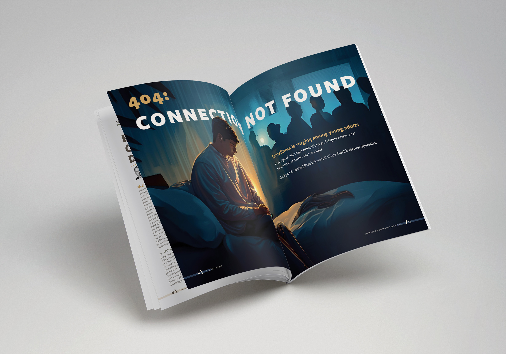
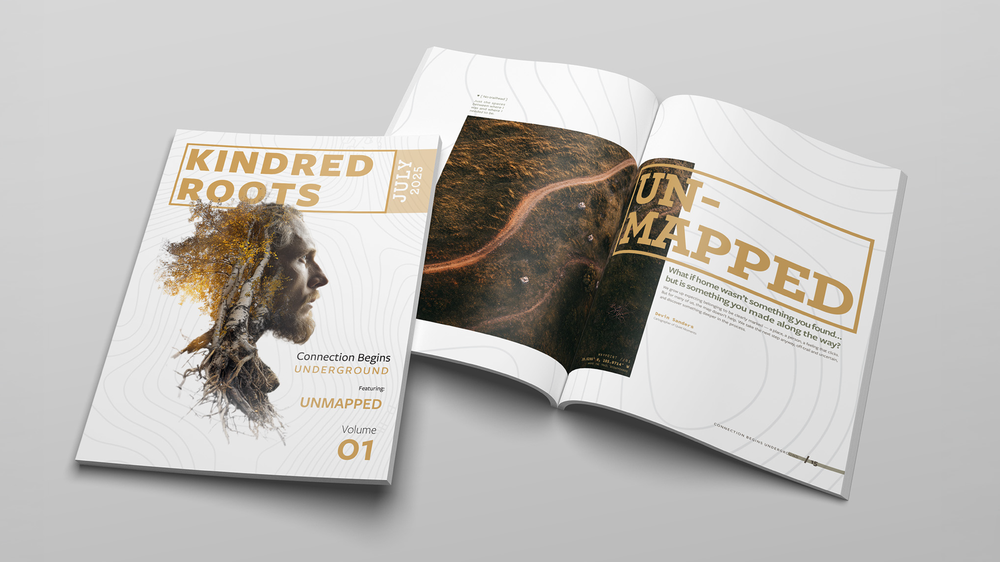
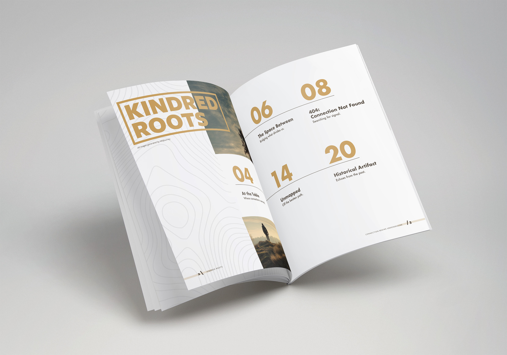
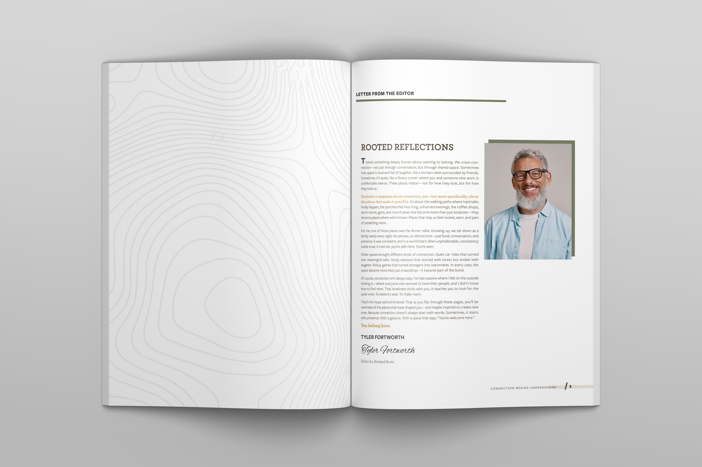
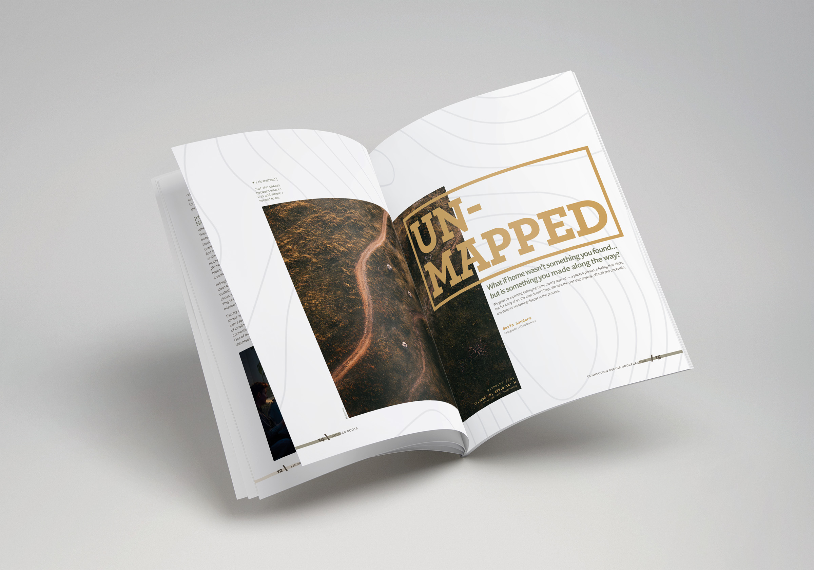
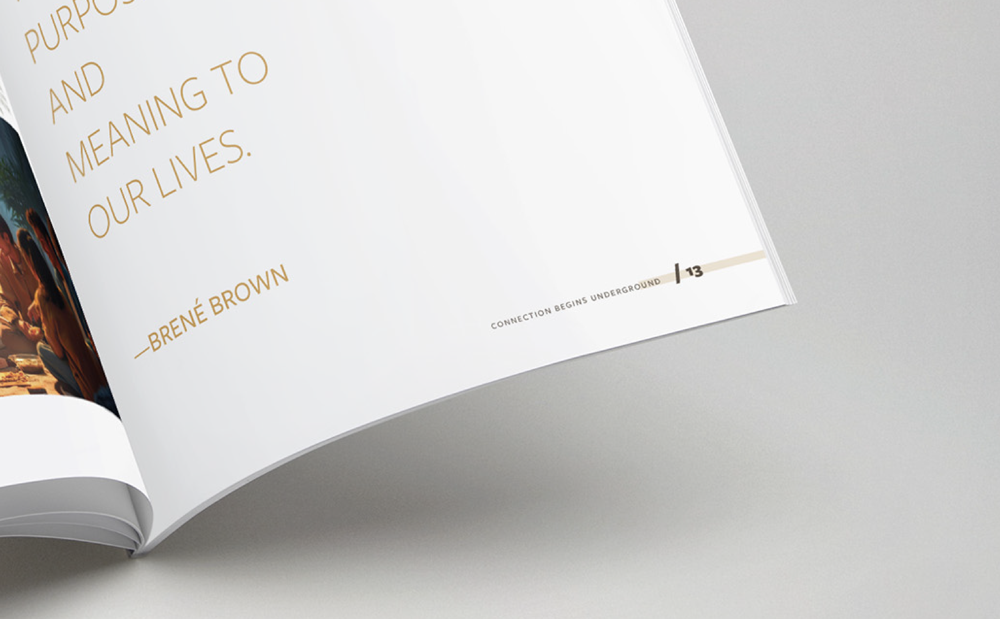
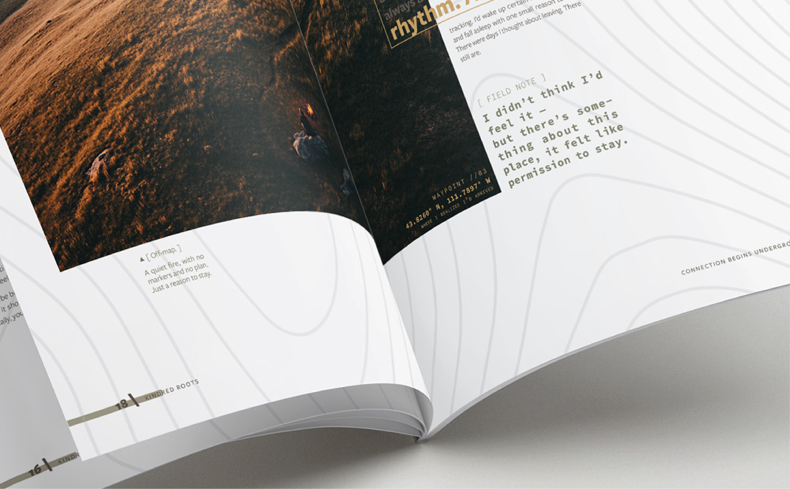
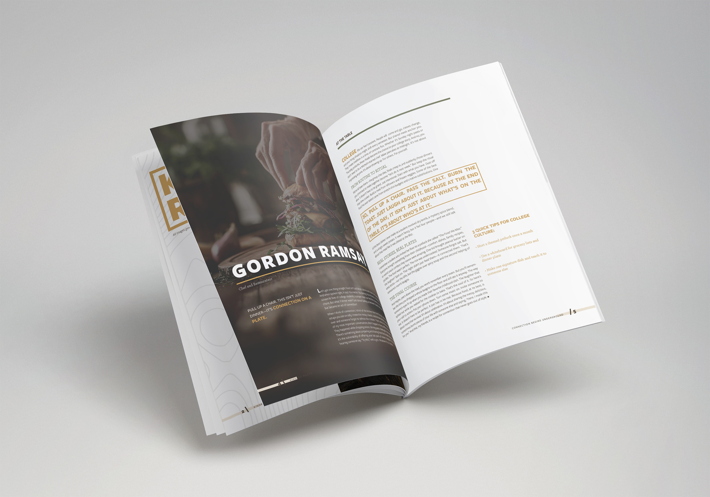
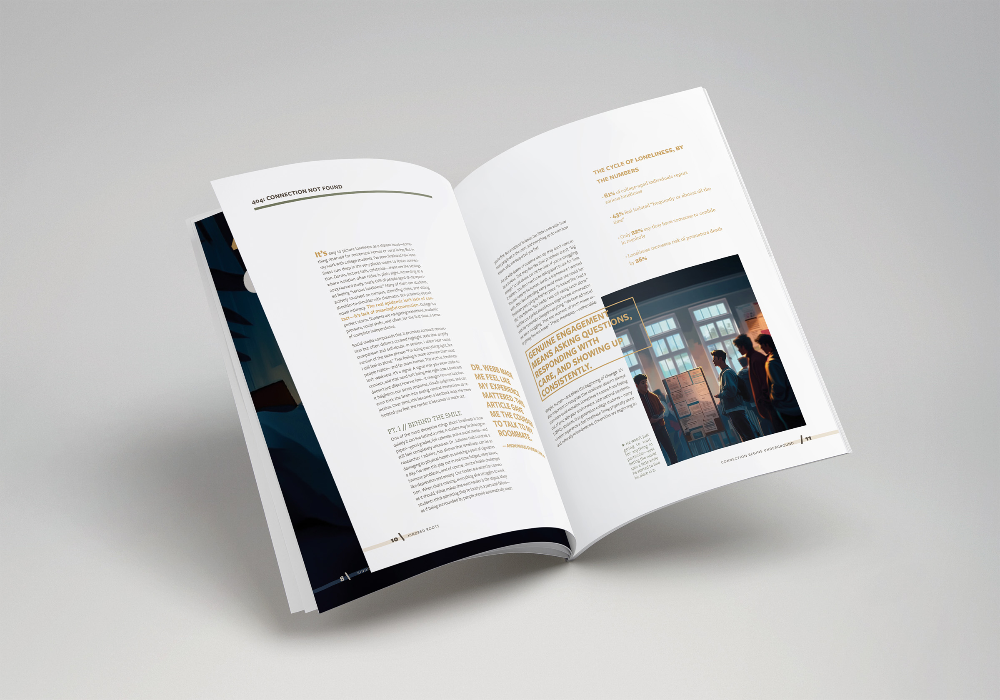
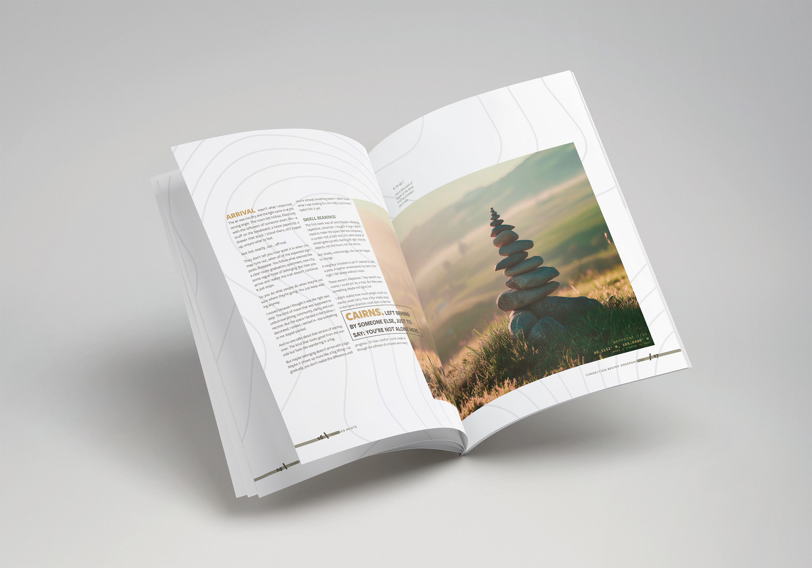

404: Connection Not Found
Feature Article // 01
Using digital error syntax, dark nocturnal color grading, and asymmetric multi-column text blocks to explore the quiet breakdown of conversational presence in digital spaces.
 Index
Index

Editorial Architecture, Typography & Publication Layout · 2026
Kindred Roots explores community, belonging, and the spaces between people in an increasingly isolated culture. This project centered on crafting an intentional editorial architecture that balances bold display typography with spacious, quiet reading spreads—establishing clear grid pacing and warm earthy tones so each multi-page narrative develops its own distinct atmosphere.

Establishing typographic pacing through spacious numerical margins, structured category dividers, and warm uncoated paper stock.
"Great publications do not fill space; they frame silence so the story can breathe."


Using digital error syntax, dark nocturnal color grading, and asymmetric multi-column text blocks to explore the quiet breakdown of conversational presence in digital spaces.

Expansive aerial landscapes framed by bold geometric title bars and subtle topographic vector elevations to evoke physical isolation and wilderness solitude.




